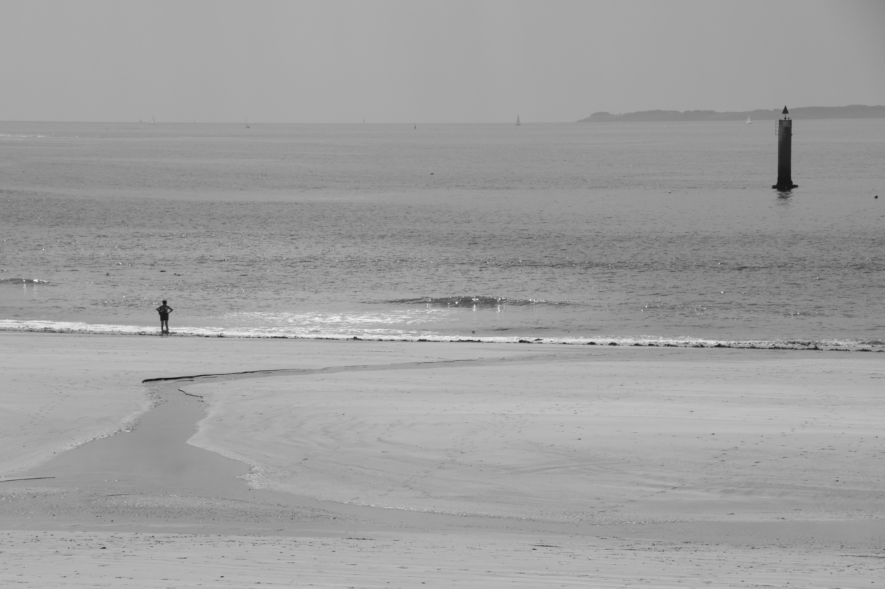
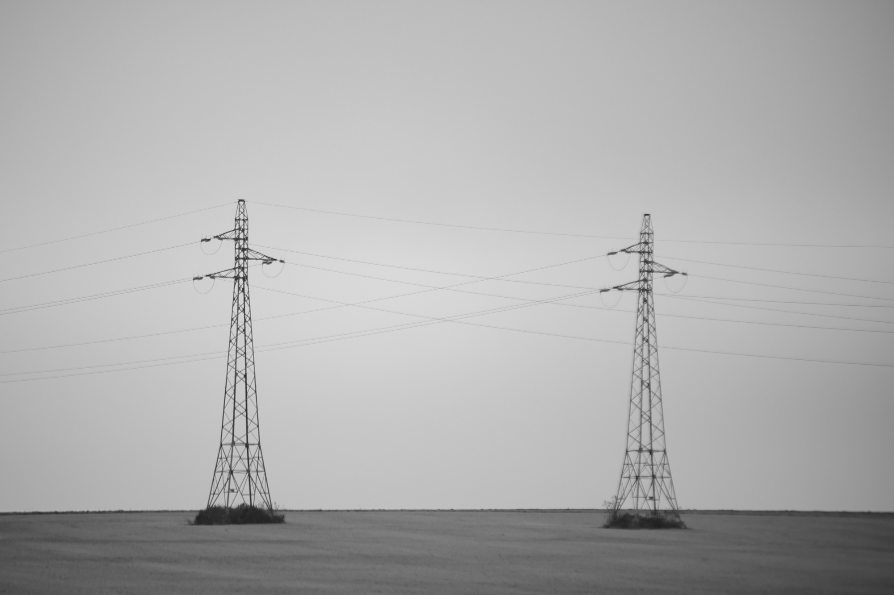
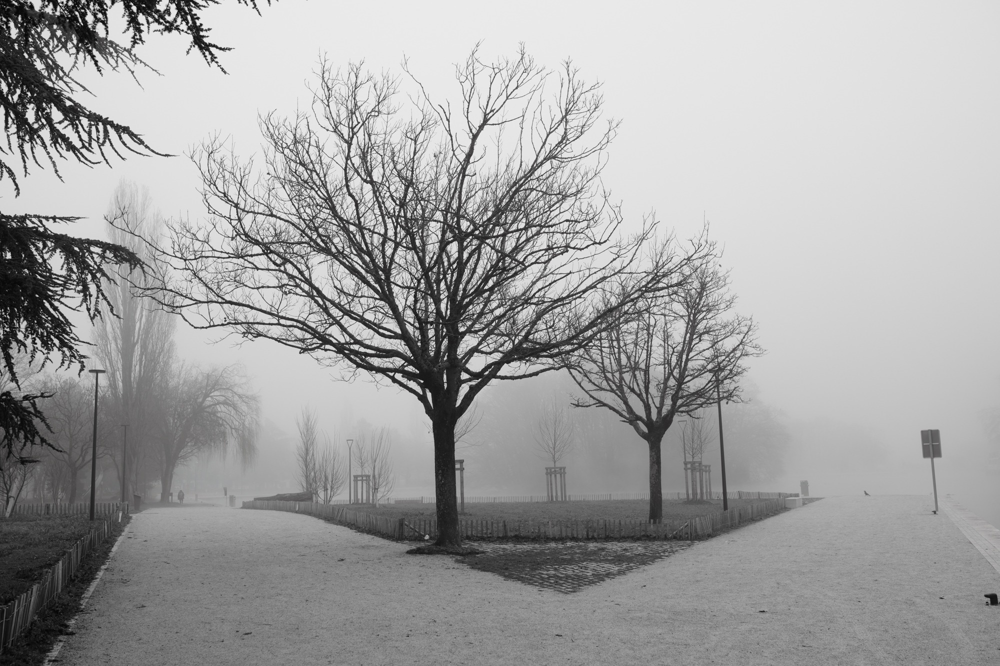
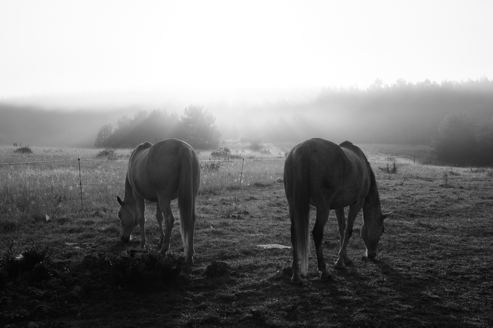
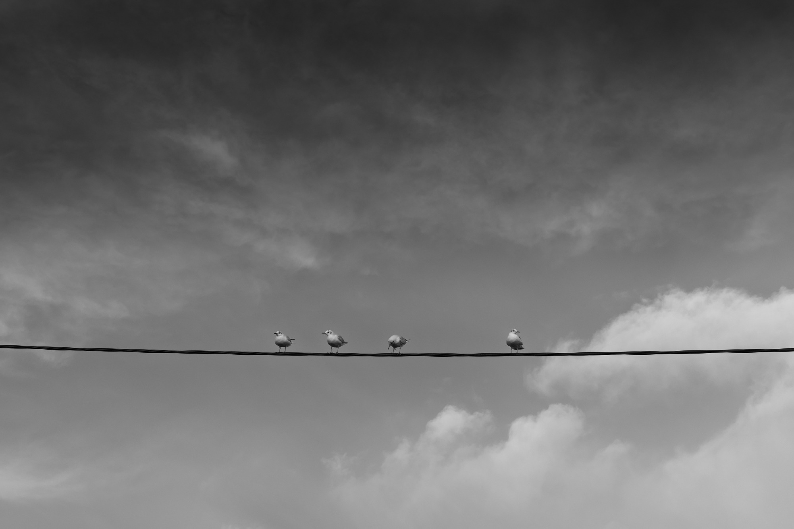
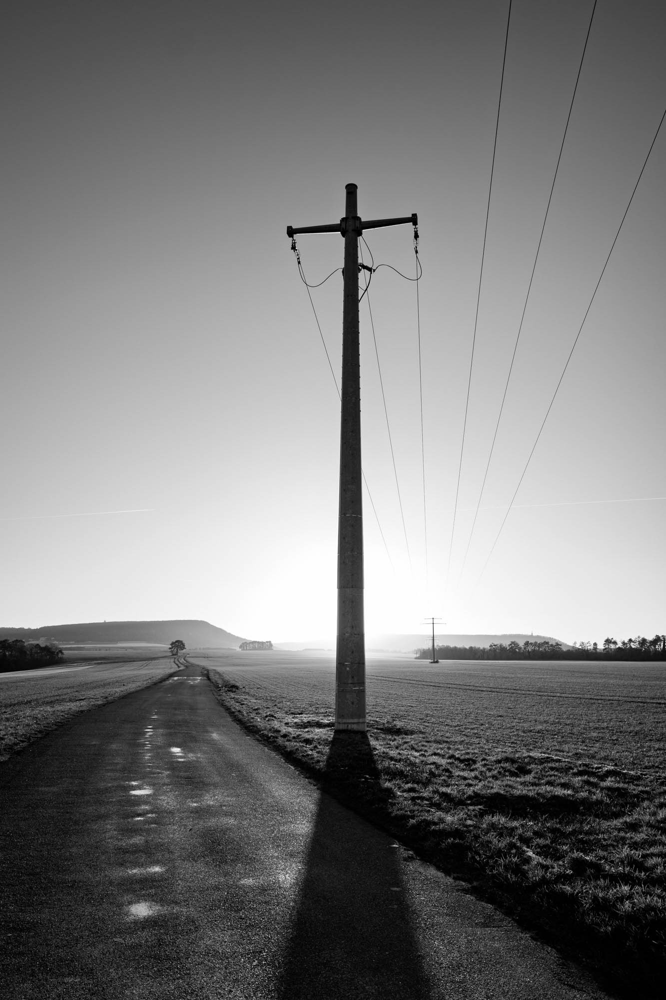
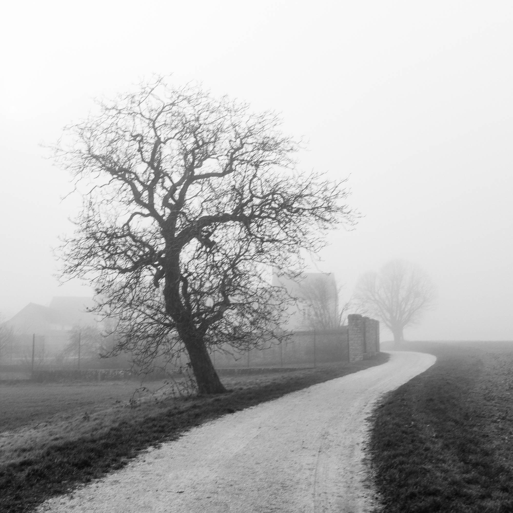

Ainsi de suite
J’ai construit cette série autour de formes simples, de présences isolées et d’espaces qui leur laissent beaucoup de place.
D’une photographie à l’autre, quelque chose se poursuit, se transforme ou disparaît.
La suite compte autant que chacune des images.






